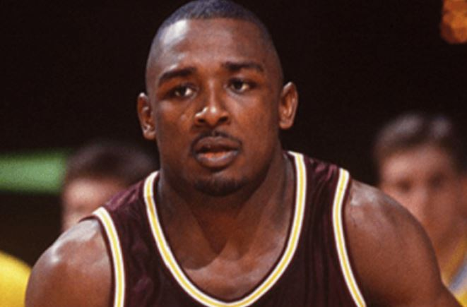

From Court Prodigy to Community Catalyst
Isaac Cherry and Stevin "Hedake" Smith Launch UMYO Sports for the Next Generation of Athletes

Isaac Cherry and Stevin "Hedake" Smith Launch UMYO Sports for the Next Generation of Athletes
Dallas, Texas — In a world hungry for authentic leadership, UMYO Sports steps forward with a mission to reshape the future for student-athletes. Co-owned by sports prodigy Isaac Cherry and redemption-driven advocate Stevin "Hedake" Smith, UMYO Sports is more than a platform — it’s a movement rooted in mentorship, opportunity, and ownership.
Isaac Cherry was a child prodigy in the world of sports. Known today as "The Human Teleprompter," Isaac developed a passion for sports at an early age. By age 11, he was already a youth sports journalist, confidently interviewing and outsmarting professional athletes weekly. His articulate, confident approach earned him a spot on The Drew Pearson Sports Talk Show and positioned him as a rising star with deep insight beyond his years.
Isaac went on to launch STI 740 Sports Talk with Isaac and Crew, laying the foundation for what would become a lifelong mission: using sports as a vehicle for empowerment. Today, he channels that mission through UMYO Sports, a platform designed to create real business opportunities for student-athletes.


Stevin Smith, once a standout guard at Arizona State University, understands the pressures of athletic stardom — and the consequences of poor guidance. Involved in one of college basketball’s most notorious sports gambling scandals, Stevin turned his story into a platform of redemption. As UMYO Sports’ Ambassador of Redemption and co-owner, he now uses his global voice to ensure that young athletes never have to walk the same path alone.
Stevin is currently traveling the world sharing his journey, transforming lives through storytelling, speaking engagements, and mentorship. His vision: empower student-athletes to build their personal brands and operate as independent contractors by leveraging NIL (Name, Image, and Likeness) deals — especially for those who lack access to the resources and support systems they deserve.
Together, Isaac and Stevin are building more than a business — they’re creating a blueprint. Through UMYO Sports, they are:
UMYO Sports isn’t just about athletics — it’s about building a foundation where passion meets purpose. It’s about showing the next generation that their talent is only the beginning.
For more information or media inquiries, please contact:
📧 Email: info@umyosports.com
📱 Follow: @UMYOSports
🌐 Visit: www.umyosports.com
UMYO Sports
Redemption. Ownership. Legacy.